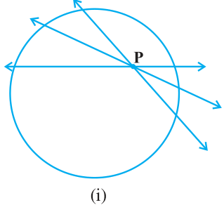
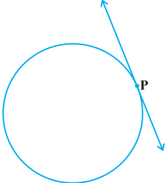
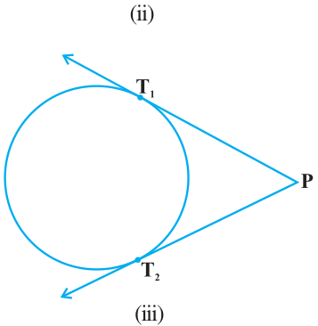

To get an idea of the number of tangents from a point on a circle, let us perform the following activity:
Activity 3 : Draw a circle on a paper. Take a point P inside it. Can you draw a tangent to the circle through this point? You will find that all the lines through this point intersect the circle in two points. So, it is not possible to draw any tangent to a circle through a point inside it [see Fig. 10.6 (i)]. Next take a point P on the circle and draw tangents through this point. You have already observed that there is only one tangent to the circle at such a point [see Fig. 10.6 (ii)]. Finally, take a point P outside the circle and try to draw tangents to the circle from this point. What do you observe? You will find that you can draw exactly two tangents to the circle through this point [see Fig. 10.6 (iii)]. We can summarise these facts as follows:


Case 1 : There is no tangent to a circle passing through a point lying inside the circle.

Case 2 : There is one and only one tangent to a circle passing through a point lying on the circle.
Case 3 : There are exactly two tangents to a circle through a point lying outside the circle. In Fig. 10.6 (iii), T_{1}and T_{2} are the points of contact of the tangents PT_{1} and PT_{2} respectively. The length of the segment of the tangent from the external point P and the point of contact with the circle is called the length of the tangent Fig. 10.6 from the point P to the circle. Note that in Fig. 10.6 (iii), PT_{1} and PT_{2} are the lengths of the tangents from P to the circle. The lengths PT_{1} and PT_{2} have a common property. Can you find this? Measure PT_{1} and PT_{2}. Are these equal? In fact, this is always so. Let us give a proof of this fact in the following theorem.
Theorem 10.2 : The lengths of tangents drawn from an external point to a circle are equal.

Proof : We are given a circle with centre O, a point P lying outside the circle and two tangents PQ, PR on the circle from P (see Fig. 10.7). We are required to prove that \(PQ = PR\). For this, we join OP, OQ and OR. Then \(\angle OQP\) and \(\angle ORP\) are right angles, because these are angles between the radii and tangents, and according to Theorem 10.1 they are right Fig. 10.7 angles. Now in right triangles OQP and ORP,
\(OQ = OR\) (Radii of the same circle) \(OP = OP\) (Common)
Therefore, \(\triangle OQP \cong \triangle ORP\) (RHS) This gives \(PQ = PR\) (CPCT)
Remarks
- 1.The theorem can also be proved by using the Pythagoras Theorem as follows:
\(PQ^{2} = OP^{2} - OQ^{2} = OP^{2} - OR^{2} = PR^{2}\) (As \(OQ =\) OR)
which gives \(PQ = PR\).
- 2.Note also that \(\angle OPQ = \angle OPR\). Therefore, OP is the angle bisector of \(\angle QPR\),
i.e., the centre lies on the bisector of the angle between the two tangents. Let us take some examples.
Example 1 : Prove that in two concentric circles, the chord of the larger circle, which touches the smaller circle, is bisected at the point of contact.

Solution : We are given two concentric circles C_{1} and C_{2} with centre O and a chord AB of the larger circle C_{1} which touches the smaller circle C_{2} at the point P (see Fig. 10.8). We need to prove that \(AP = BP\).
Let us join OP. Then, AB is a tangent to C2 at P Fig. 10.8 and OP is its radius. Therefore, by Theorem 10.1,
\(OP \perp AB\)
Now AB is a chord of the circle C_{1} and \(OP \perp AB\). Therefore, OP is the bisector of the chord AB, as the perpendicular from the centre bisects the chord, i.e., \(AP = BP\) Example 2 : Two tangents TP and TQ are drawn to a circle with centre O from an external point T. Prove that \(\angle PTQ = 2 \angle OPQ\). Solution : We are given a circle with centre O, an external point T and two tangents TP and TQ to the circle, where P, Q are the points of contact (see Fig. 10.9). We need to prove that

\(\angle PTQ = 2 \angle OPQ\) Fig. 10.9
Let \(\angle PTQ =\) θ
Now, by Theorem 10.2, \(TP = TQ\). So, TPQ is an isosceles triangle.
Therefore, \(\angle TPQ = \angle TQP = \frac{1}{2} (180 ^{\circ}\) -θ=) \(90 ^{\circ} - \frac{1}{2}\) θ Also, by Theorem 10.1, \(\angle OPT = 90 ^{\circ}\)
So, \(\angle OPQ = \angle OPT - \angle TPQ = 90 ^{\circ} - 90 ^{\circ} - \frac{1}{2}\) θ
This gives \(\angle PTQ = 2 \angle OPQ\)

Example 3 : PQ is a chord of length 8 cm of a circle of radius 5 cm. The tangents at P and Q intersect at a point T (see Fig. 10.10). Find the length TP.
Solution : Join OT. Let it intersect PQ at the point R. Then \(\triangle TPQ\) is isosceles and TO is the angle bisector of \(\angle PTQ\). So, \(OT \perp PQ\) and therefore, OT bisects PQ which gives
\(PR = RQ = 4\) cm.
Also, \(OR = OP^{2} - PR ^{2} = 5^{2} - 4^{2}\) cm \(= 3\) cm. Fig. 10.10
Now, \(\angle TPR + \angle RPO = 90 ^{\circ} = \angle TPR + \angle PTR\) (Why?) So, \(\angle RPO = \angle PTR\) Therefore, right triangle TRP is similar to the right triangle PRO by AA similarity.
This gives \(\frac{TP}{PO} = \frac{RP}{RO}\) , i.e., \(TP5 = \frac{4}{3}\) or \(TP = \frac{20}{3}\) cm. Note : TP can also be found by using the Pythagoras Theorem, as follows: Let \(TP = x\) and \(TR = y\). Then
\(x^{2} = y^{2} + 16\) (Taking right \(\triangle\) PRT) \((1) x^{2} + 5^{2} =\) (y \(+ 3)^{2}\) (Taking right \(\triangle\) OPT) (2)
Subtracting (1) from (2), we get
\(25 = 6y - 7\) or \(y = \frac{32}{6} = \frac{16}{3}\)
Therefore, \(x^{2} = \frac{16}{3} +^{2} 16 = \frac{16}{9} (16 + 9) = \frac{16 \times 25}{9}\) [From (1)]